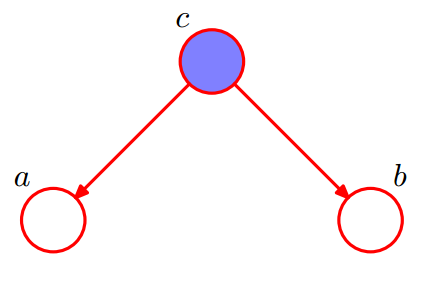
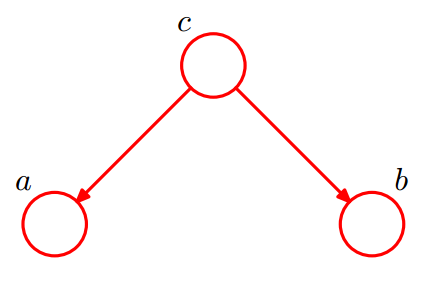
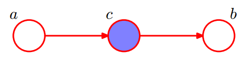
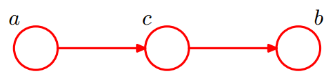
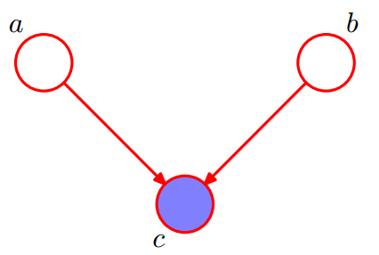
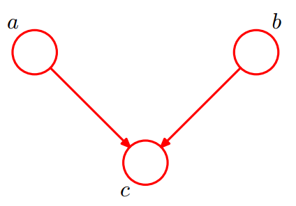
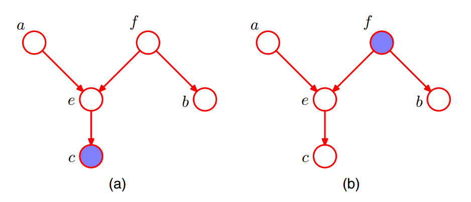
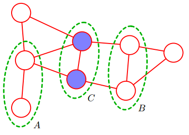

条件独立性
定义
多变量概率分布中的一个重要概念就是条件独立性(conditional independence)。
考虑三个变量$a$, $b$, $c$， 并且假设给定$b$, $c$的条件下$a$的条件概率分布不依赖于$b$的值，即：
$$
p(a| b, c) = p(a |c)
$$
此时我们说，给定$c$的条件下，$a$条件独立于b。
推论：给定$c$的条件下，对于$a$条件独立于b ，有下式成立：
$$
\begin {aligned}
p(a,b|c) & = p(a|b,c)p(b|c) \\
& =p(a|c)p(b|c) \\
\end {aligned}
$$
当使用概率模型时，条件独立性起着重要的作用，它简化了模型的结构，降低了模型的训练和推断的计算量。
证明
在图模型中，对于是三个变量$a$, $b$, $c$来说要证明 given $c$， $a$条件独立与$b$。按照 $c$ 是否被观察到分两种情况讨论：
如果$c$被观察到了， given $c$， $a$条件独立与$b$ 等价于
$$
p(a,b|c) =p(a|c)p(b|c)
$$
如果$c$是隐变量， given $c$， $a$条件独立与$b$等价于
$$
p(a,b) =p(a)p(b)
$$
即，此时需要marginalizing with respect to $c$。
贝叶斯网条件独立性（D-separation）
如上文所述，条件独立性能够大大的简化模型结构, 降低模型的训练和推断的计算量。
对于有向图来说，我们可以使用图中变量的联合分布来表示这张图, 即, 图中相关变量的条件概率的乘积. 表示的这些变量的联合分布时，怎么确定其中哪些变量之间是条件独立的呢？有两种方案：
- 使用概率公式推导。该方法已经验证是非常复杂的一个过程。
- d-separation。本文所要论述的内容。
图模型的一个重要特征是，图中所有变量之间的条件独立性可以直接从图中读出来，不需要进行任何计算。从图中读出条件独立性的方法叫做d-separation，其中”d“即directed。
三个例子
下面首先使用三个简单的例子来说明d-separation中的核心概念。 这三个例子都是讨论 given $c$， $a$条件独立与$b$是否成立的。
tail-2-tail

$$
\begin {aligned}
p(a,b,c) & = p(a|c)p(b|c)p(c) \\
\\
p(a,b|c) & = \frac{p(a,b,c)}{p(c)} \\
& = p(a|c)p(b|c)
\end {aligned}
$$
given $c$， $a$条件独立于$b$ 成立。

$$
\begin {aligned}
p(a,b,c) & = p(a|c)p(b|c)p(c) \\
\\
p(a,b) & =\sum_c p(a,b,c) \\
& =\sum_c p(a|c)p(b|c) p(c) \neq p(a)p(b)
\end {aligned}
$$
given $c$， $a$条件独立于$b$ 不成立。
head-2-tail

$$
\begin {aligned}
p(a,b,c) & =p(a)p(c|a)p(b|c)\\
\\
p(a,b|c) & = \frac{p(a,b,c)}{p(c)} \\
& = \frac{p(a)p(c|a)p(b|c)}{p(c)} \\
& = p(a|c)p(b|c)
\end {aligned}
$$
given $c$， $a$条件独立于$b$ 成立。

$$
\begin {aligned}
p(a,b,c) & =p(a)p(c|a)p(b|c)\\
\\
p(a,b) & =p(a)\sum_c p(c|a)p(b|c)=p(a)p(b|a) \neq p(a)p(b)
\end {aligned}
$$
given $c$， $a$条件独立于$b$ 不成立。
head-2-head

$$
\begin {aligned}
p(a,b,c) & =p(a)p(b)p(c|a,b) \\
\\
p(a,b|c) & =\quad \frac{p(a,b,c)}{p(c)} \\
& = \frac{p(a)p(b)p(c|a,b)}{p(c)} \neq p(a|c)p(b|c)
\end {aligned}
$$
given $c$， $a$条件独立于$b$ 不成立。

$$
\begin {aligned}
p(a,b,c) & =p(a)p(b)p(c|a,b) \\
\\
p(a,b) & =\sum_c p(a,b,c) = p(a)p(b)
\end {aligned}
$$
given $c$， $a$条件独立于$b$ 成立。
作为原因的多个因素(a,b)，即使它们之间是相互独立的，确定结果(c)之后这些原因就可能变的相关了。当结果(c)不作为观测变量的时候，原因是相互独立的，也叫做边缘独立（Marginal Independence）.
如果一个节点$y$是$x$的一个子节点，则
如果存在从结点$x$到结点$y$的一条路径，其中路径的每一步都沿着箭头的方向，那么我们说结点$y$是结点$x$的后代(descendant)。可以证明，在类似于上图中的head-2-head的路径中，如果结点$c$或者它的任意后代节点被观测到，那么路径会unblocked，即a和b是条件相关的。
总结
一个tail-2-tail结点或者head-2-tail结点使得一条路径没有被阻隔(unblocked)，当它被观测到时，它就
阻隔了路径；
一个head-2-head结点如果没有被观测到那么它阻隔了路径(block)，如果它被观测到或者他的后代节点被观测到了，
那么路径就没有被阻隔(unblocked)了。
| unobserved | observed | |
|---|---|---|
| tail-2-tail | unblocked | blocked |
| head-2-tail | unblocked | blocked |
| head-2-head | blocked | unblocked(descendant) |
定义
d-separation研究的是：
given C，判断 A 和 B 是否是关于 C 条件独立的。
其中C是所有被观测到的点的子集。
下面给出d-separation的定义。
对于 DAG 图 G，如果A，B，C是三个集合（可以是单独的节点或者是节点的集合）C是由观测到的点组成的，为了判断 A 和 B 是否关于 C 条件独立的(即，在给定/观测到C时 A和B是否条件独立)， 我们考虑G中所有A和B之间的无向路径 。 对于其中的一条路径，如果她满足以下两个条件中的任意一条，则称这条路径是阻塞（block）的：
（1）路径中存在某个节点 X 是 head-to-tail 或者tail-to-tail 节点，并且 X 是包含在 C 中的；
（2）路径中存在某个节点 X 是 head-to-head节点，并且 X 或 X的儿子是不包含在 C 中的；
如果 A，B 间所有的路径都是阻塞的，那么 A，B 就是关于 C 条件独立的；否则， A，B 不是关于 C 条件独立的。
举例如下：

对于图(a)， $A= \{a\},B=\{b\},C=\{c\}$ 。given C，判断 A 和 B 是否是关于 C 条件独立的。分析方法如下：
- 从a到b的无向路径上包含两个节点：e和f；
- e：head-to-head节点，其子节点属于C，不符合第（2）条，unblocked。
- f：tail-to-tail节点，f不属于C，不符合第（1）条，unblocked。
结论：given C， A 和 B 关于 C 条件独立 不成立。
对于图(b)， $A= \{a\},B=\{b\},C=\{f\}$ 。given C，判断 A 和 B 是否是关于 C 条件独立的。分析方法如下：
- 从a到b的无向路径上包含两个节点：e和f；
- e：head-to-head节点，e与其子节点不属于C，符合第（2）条，blocked。
- f：tail-to-tail节点，f属于C，符合第（1）条，blocked。
结论：given C， A 和 B 是否是关于 C 条件独立的 成立。
马尔可夫随机场的条件独立性
在有向图的情形下，我们看到可以通过使用被称为d-separation的图检测法判断一个特定的条件独立性质是否成立。这涉及到判断链接两个结点集合的路径是否被”阻隔”(blocked), 其中涉及到的三种情形(head-2-head, head-2-tail, tail-2-tail)中head-2-head是比较特殊的(D-separation的第二个条件)。
对应于无向图模型。通过移除图中链接的方向性，一个结点和另一个结点的非对称性也被移除了，因此head-2-head结点的特殊性质也就不再存在了。
第一种方法：
假设在一个无向图中，我们有三个结点集合，记作A，B， C。我们考虑条件独立性质，其中C是被观测点的集合。
考虑连接集合A的结点和集合B的结点的所有可能路径。如果所有这些路径 都 通过了集合C中的一个或多个结点，那么所有这样的路径都被“阻隔”(blocked)，因此条件独立性质成立, 如果存在至少一条未被阻隔的路径，那么条
件独立的性质不成立.
这与d划分的准则完全相同，唯一的差别在于没有头到头的现象。因此，无向图的条件独立性的检测比有向图简单。
第二种方法：
另一种条件独立性的检测的方法是假设从图中把集合C中的结点以及与这些结点相连的链接全部删除，如果不存在一条从A中任意结点到B中任意结点的路径，那么条件独立的性质便定成立.
举例：

如上图，其中从集合A中的任意结点到集合B中的任意结点的每条路径都通过集合C中的至少一个结点。所以given C，A与B条件独立。
移除集合C中的所有节点和与之相关的连接，不存在一条从A中任意结点到B中任意结点的路径，所以given C，A与B条件独立。
参考资料
Pattern Recognition and Machine Learning